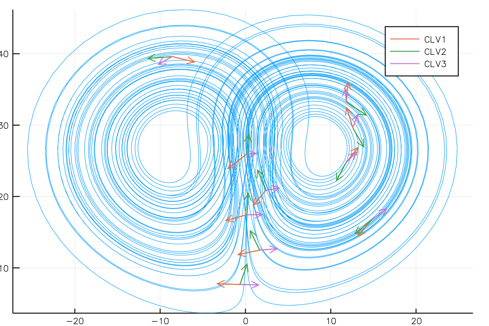

Covariant Lyapunov vectors on the Lorenz attractor

This is a demonstration for solving CLV problem CLVProblem and receiving the results via the iterator-based APIs indexed_forward_dynamics!, indexed_backward_dynamics!, CLV, etc.
using LyapunovExponents
num_rec = 20
sampling_interval = 5
t_renorm = 1
t_clv = t_renorm * num_rec * sampling_interval
prob = CLVProblem(LyapunovExponents.lorenz_63().prob,
t_renorm = t_renorm,
t_forward_tran = 4000,
t_backward_tran = 4000,
t_clv = t_clv)
solver = init(prob)
x_history = [Vector{Float64}(3) for _ in 1:num_rec]
G_history = [Matrix{Float64}(3, 3) for _ in 1:num_rec]
C_history = [Matrix{Float64}(3, 3) for _ in 1:num_rec]
forward = @time forward_dynamics!(solver; progress=1)
@time for (i, G) in indexed_forward_dynamics!(forward)
k, r = divrem(i, sampling_interval)
j = k + 1
if r == 1 && j <= num_rec
x_history[j] .= phase_state(forward)
G_history[j] .= G
end
end
@time for (i, C) in @time indexed_backward_dynamics!(solver; progress=1)
k, r = divrem(i, sampling_interval)
j = k + 1
if r == 1
C_history[j] .= C
end
end
CLV_history = [G * C for (G, C) in zip(G_history, C_history)]
using DifferentialEquations
sol = solve(ODEProblem(
prob.phase_prob.f,
x_history[1],
(0.0, t_clv * 3),
prob.phase_prob.p
))
using Plots
plt = plot(sol, vars=(2, 3), linewidth=0.5, linealpha=0.5, label="")
vec_scale = 3
for (n, (x, V)) in enumerate(zip(x_history, CLV_history))
for i in 1:3
plot!(plt,
[x[2], x[2] + vec_scale * V[2, i]],
[x[3], x[3] + vec_scale * V[3, i]],
color = i + 1,
arrow = 0.4,
label = (n == 1 ? "CLV$i" : ""))
end
end
plt